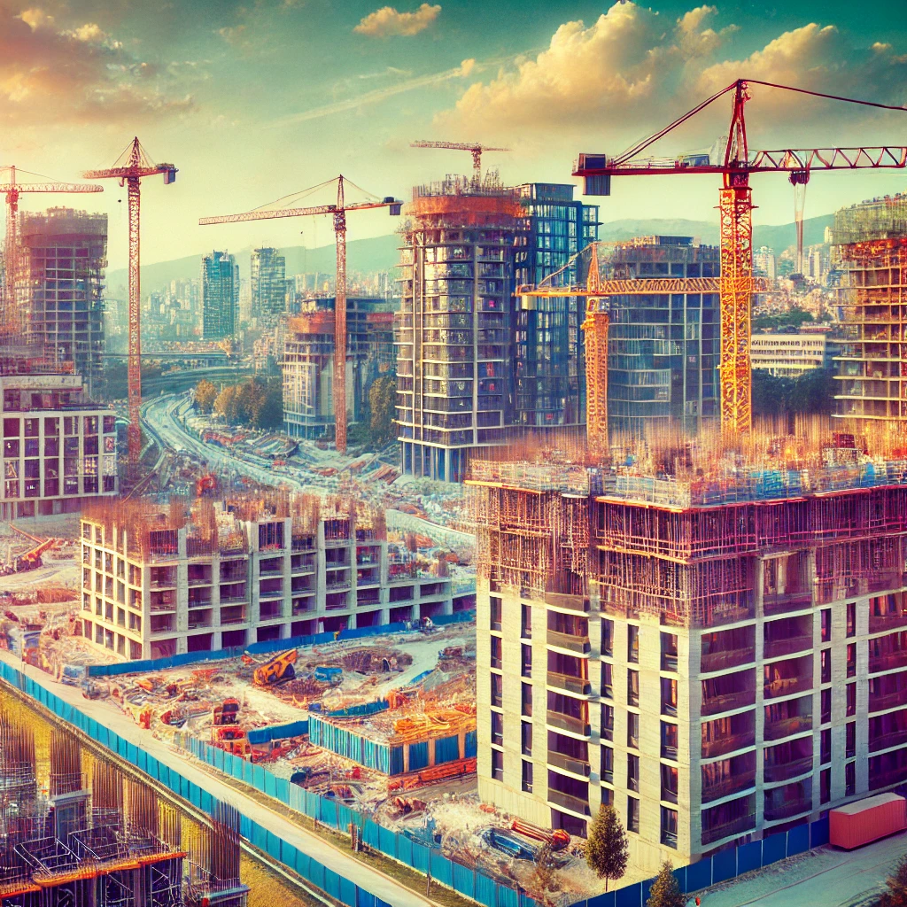

Počela je gradnja novog luksuznog kompleksa na Grbavici, sa planiranim modernim stanovima i pratećim sadržajima. Očekuje se završetak projekta u roku od dvije godine.

U prodaji je prostran trosoban stan smješten u mirnom dijelu Ilidže, s prelijepim pogledom na okolne planine i rijeku Željeznicu. Stan nudi svijetle prostorije, veliki dnevni boravak, te balkon idealan za opuštanje. Lokacija je pogodna za porodice jer se u blizini nalaze parkovi, škole i trgovine, a javni prevoz omogućava brz pristup centru grada. Stan je dodatno opremljen savremenim uređajima i klimatizacijom, pružajući sve uslove za komforan život.
Općina Stari Grad najavila je obimno renoviranje starih zgrada i objekata kako bi se očuvala autentičnost Sarajeva. Cilj je poboljšati sigurnost i izgled ovih historijskih građevina.
Stanovi u blizini Trebevića postaju popularni među kupcima koji žele prirodni ambijent, mir i brzi pristup gradu. Ovo je idealna prilika za ljubitelje prirode koji žele pobjeći od gradske gužve.
Počela je prodaja stanova u luksuznom naselju na Ciglanama, koje su već privukle pažnju potencijalnih kupaca zbog modernog dizajna i prostranih terasa s panoramskim pogledom na Sarajevo. Naselje je zamišljeno kao oaza mira unutar užurbanog grada, pružajući stanovnicima vrhunsku udobnost, privatnost, i sve potrebne sadržaje u neposrednoj blizini. Planira se uvođenje dodatnih sadržaja, uključujući zelene površine, igraonice za djecu, te rekreativne prostore koji omogućavaju opuštanje i kvalitetno provođenje slobodnog vremena.
Na Otoci se gradi novi stambeni blok s modernim stanovima, dizajniranim za sve tipove stanara. Blizina javnog prevoza i zelenih površina čini ovaj kompleks idealnim za gradski život.
Nova faza prodaje stanova na Bistriku privukla je pažnju mnogih kupaca zbog povoljne lokacije blizu centra. Stanovi nude moderan enterijer i prelijep pogled na Sarajevo.
Stanovi u novoj zgradi na Marijin Dvoru dostupni su po atraktivnim cijenama. Lokacija je idealna za one koji žele živjeti blizu poslovnih centara i kulturnih atrakcija.
Gradnja luksuznih stanova s pogledom na Miljacku ulazi u završnu fazu. Novi vlasnici mogu očekivati vrhunski dizajn i udobnost u ovim modernim stanovima.
Novi stambeni blok u Hrasnom privukao je brojne porodice zbog svoje lokacije u blizini škola, trgovina, parkova i javnog prevoza, čineći ga savršenim izborom za porodice s djecom. Naselje nudi spoj modernog dizajna i funkcionalnosti, dok se posebna pažnja posvetila uređenju zajedničkih prostora, kao što su igrališta i zelene površine za druženje i rekreaciju. U toku su dodatni radovi na unapređenju infrastrukture, kako bi naselje bilo optimalno povezano s ostatkom grada i pružilo vrhunsku kvalitetu života svim stanovnicima.
U srcu Sarajeva završava se gradnja modernih stanova u neposrednoj blizini Baščaršije, pružajući jedinstvenu priliku za život u centru historijskog dijela grada. Stanovi su projektovani s fokusom na funkcionalnost i estetiku, opremljeni su najsavremenijom tehnologijom i luksuznim materijalima, što ih čini idealnim za one koji traže spoj udobnosti i tradicionalnog duha Sarajeva. Uz to, budući stanari moći će uživati u bogatom kulturnom životu i šetnji historijskim ulicama, dok se svi potrebni sadržaji, od restorana do prodavnica, nalaze na samo nekoliko koraka od njihovih vrata.
Kako bi se poboljšao kvalitet života, planirano je proširenje infrastrukture oko naselja Dobrinja. Novi projekti uključuju parkove, igrališta i dodatne saobraćajne poveznice.
Počelo je postavljanje pristupnih puteva za novi stambeni kompleks na Mojmilu. Očekuje se da će završetak puta olakšati pristup budućim stanarima i unaprijediti saobraćajnu povezanost u ovom dijelu grada.